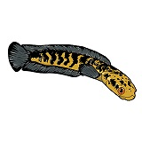
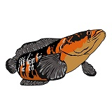
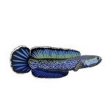
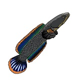

Channa Yellow Sentarum
Channa ini merupakan ikan yang berasal dari danau Sentarum di Kapuas Hulu Kalimantan Barat, ikan ini cenderung berwarna kuning dengan corak atau motif hitam.
View detail

Channa Red Sampit
Channa ini merupakan ikan yang berasal dari sungai Sampit dari Kalimantan Tengah, ikan ini cenderung berwarna merah ke orenan atau bahkan berwarna oren dengan motif hitam.
View detail

Channa Stewartii
Channa ini merupakan ikan yang berasal dari Asia Selatan, lebih tepatnya di Negara India dan Nepal, ikan ini cenderung berwarna dasar putih dengan dot hitam disekujur tubuhnya dan sirip berwarna biru bergaris oren.
View detailChanna Limbata
Channa ini juga merupakan dari kelurga Channidae, genus channa dengan nama spesies channa limbata. Ikan ini merupakan jenis gabus tropis dengan habitat alami Asia Tenggara dan juga India. Channa ini juga memiliki postur kecil dengan ukuran maksimum 28cm. Persebaran alami ikan channa limbata meliputi wilayah perairan Indoesia, Malaysia, Thailand, Sri Lanka, dan India.